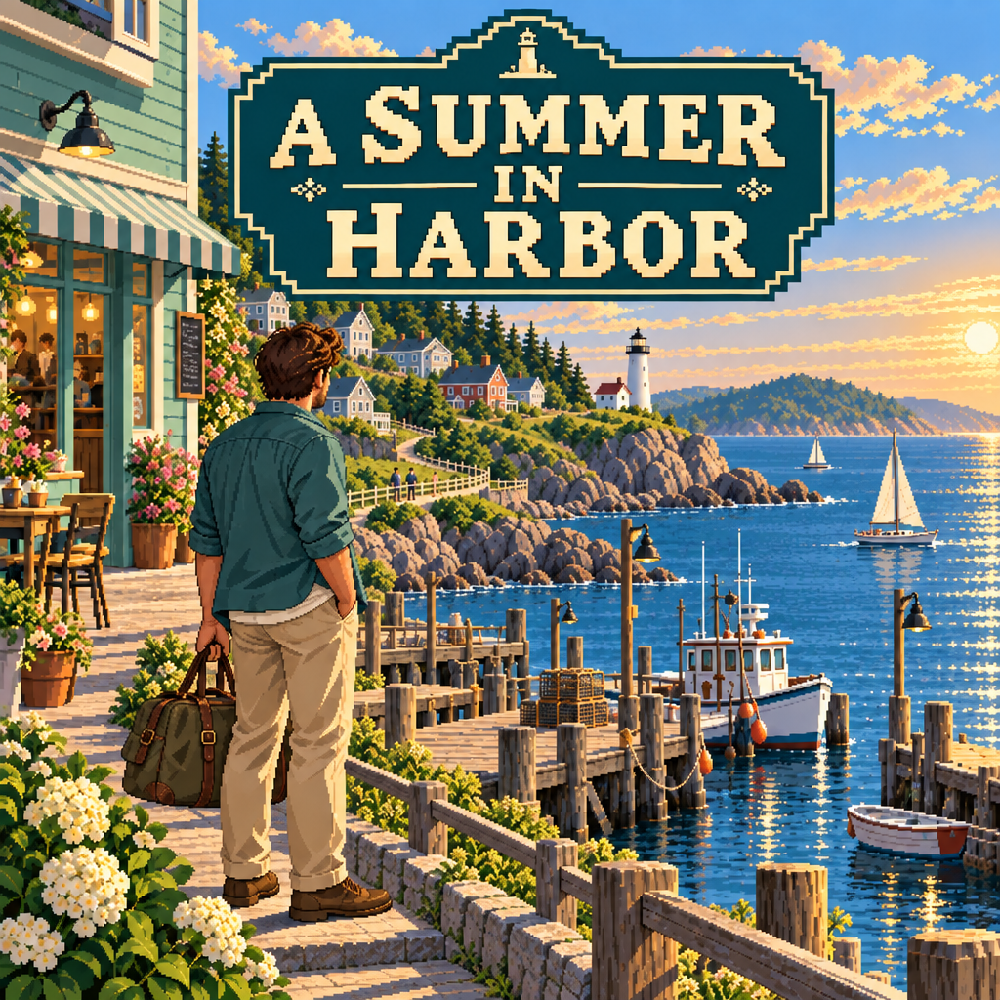

From hello to being remembered.
Come back after a few game days, keep a promise and bring up a shared memory. Relationships with Mara, Avery and Samira can grow gradually closer.
An AI-powered life adventure
Meet the people who live here and share in their days. AI responds to your questions and follows the clues you find, so your summer can slowly grow into a story of its own.

Play today
6 actual game screenshots · Scroll and open to enlarge. Chinese text inside the original screenshots remains as captured.
Begin with a greeting. Listen to residents and travelers, and get to know them at your own pace.
Join a live gym practice. Move, dodge and strike while finding the coach's rhythm.
Plant, water and come back to harvest. The garden grows along with time in the game.
Walk along the pier, look out at the sea, and talk to someone who has stopped there.
Come home to the cottage. The bed, desk and open suitcase become familiar corners of the summer.
As time in the game reaches night, familiar corners take on another color.
Let everyday life become a story
Come back after a few game days, keep a promise and bring up a shared memory. Relationships with Mara, Avery and Samira can grow gradually closer.
Tend the beds and supply Theo's kitchen. What you grow and do becomes a harvest in your bag and a record of your journey.
Ask Mara about town life and follow up. AI responds within the character and your journey so far; conversations and discoveries become part of your story.
You can watch the weather, observe Harbor's animals, gather in the wild and tend plants. AI supports open conversation and clue finding as your everyday experiences stay with your journey.
Game time advances while you stand or walk in town. It pauses while reading, talking, using panels or away from the game; resting and other actions settle time by their own rules.
Candidates and future plans
Explore three possible gameplay loops and a phased route to cooperation. These are proposals to test, not a list of released features or promised dates.
Start with a name
From portraits to the sprites you meet in the game.
Usual locations follow game time.
Opening the resident book…
Resident profiles are temporarily unavailable. Please refresh and try again.
Bring a little curiosity into a harbor that keeps growing.
Enter the harbor